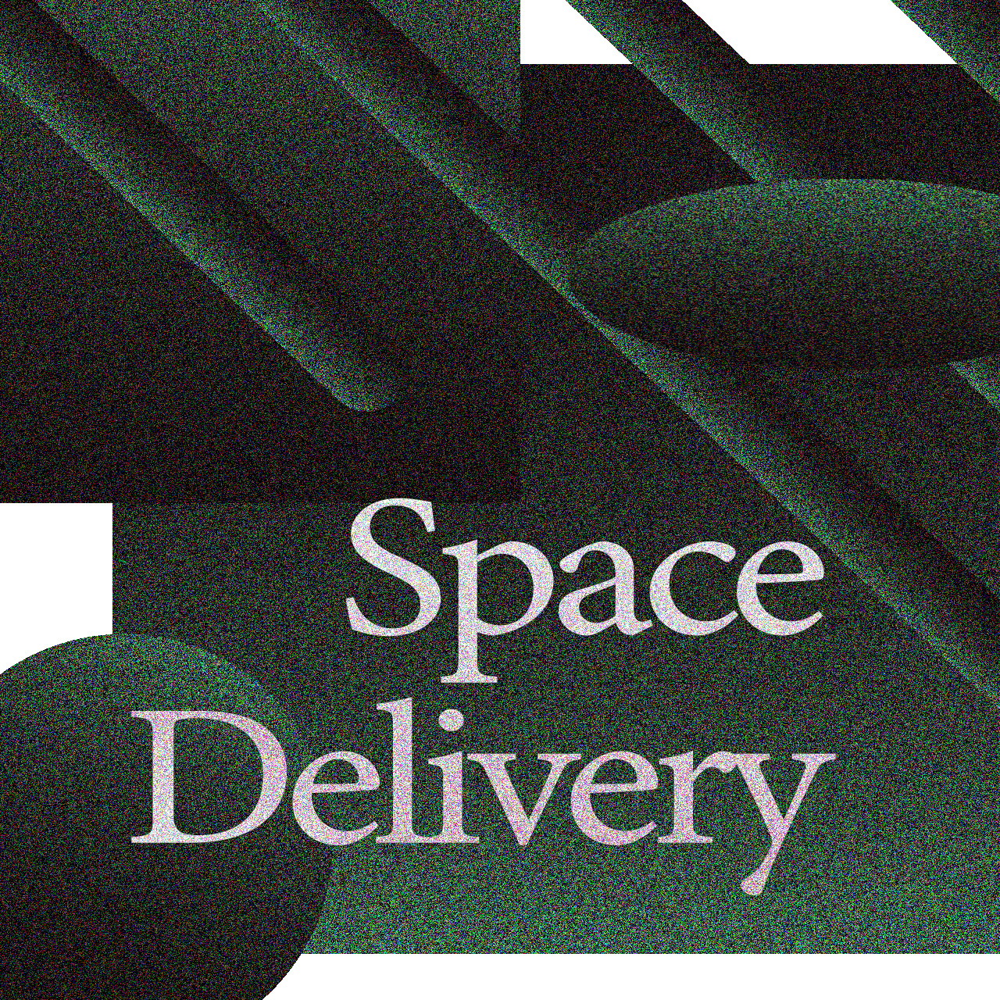
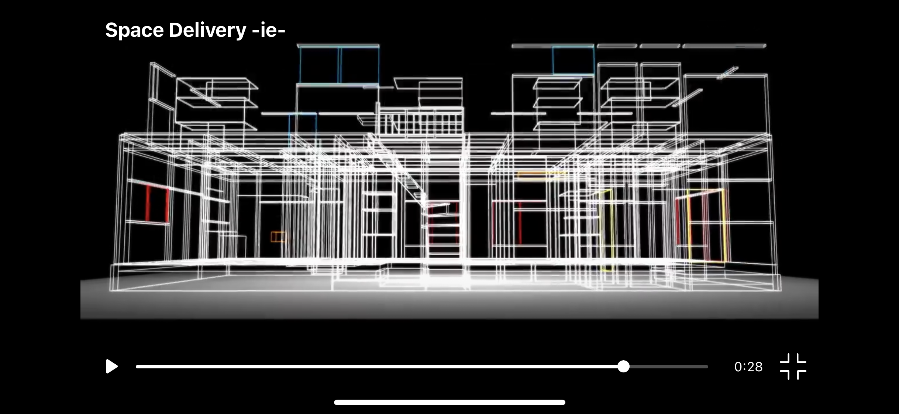

Space Delivery
新型コロナウイルスの蔓延を受けてオンライン化した学園祭への出展作品。
動画という制約の中でどれだけ空間が届けられるか、またその制約が逆に何をもたらすか、空間伝達の試行錯誤を行なった。
立体音響とCGを同時に制御する映像プログラムを作成した上で、生活音の再構成、動画がもたらす自由視点、行動伝染について思考した。
intro
Space Delivery
ie
mikan
akubi